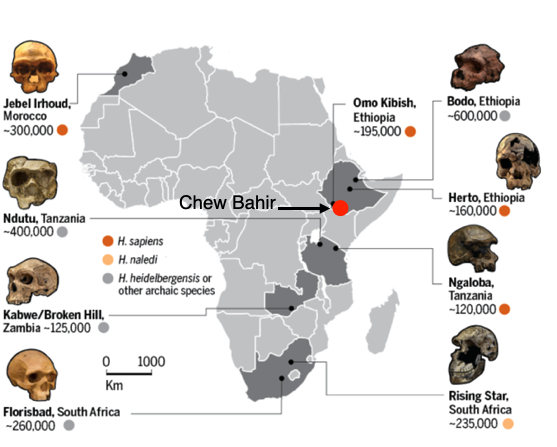
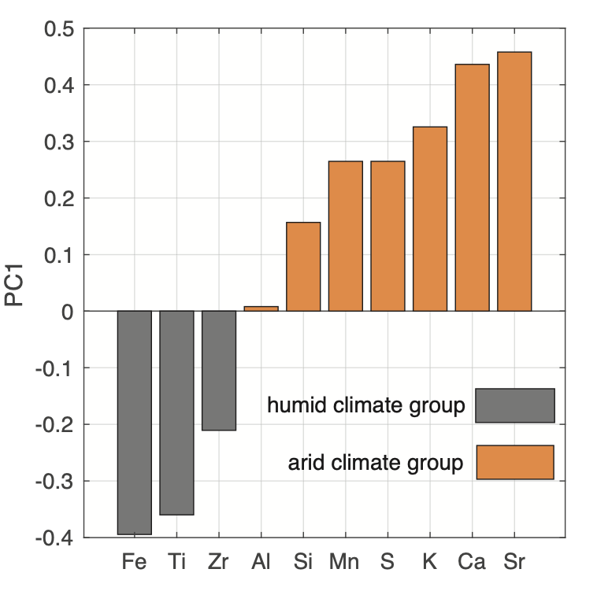
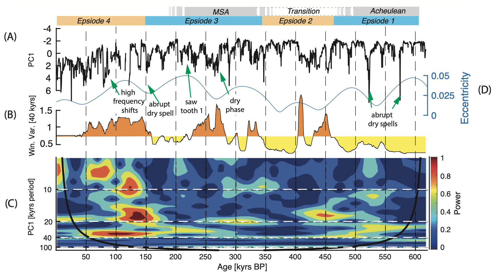

There is intensive debate whether and how both long- and short-term climate changes have affected the evolution, dispersal and technological/cultural innovation of our species Homo sapiens. To answer this question the analysis of sedimentary archives from Africa that captured the climate variability that hominins encountered are necessary. Here, we present a ~620,000 year climate record from the Chew Bahir Basin (CHB) situated in the southern Ethiopian rift. This paleoclimate record was collected ~90 km from the famous Omo Kibish fossil locality, which represents the first documented appearance of H. sapiens in eastern Africa. To decipher past climate variability in eastern Africa, we utilized micro X-ray fluorescence data from the Chew Bahir sediment core and applied a principal component analysis (PCA) to identify the factors controlling sediment composition, representing wet and dry climate states. In a second step we calculated the wavelet power spectrum from the first principal component (PC) to map temporal variations of orbitally-controlled cyclic variations in the sediment composition. Our results show that the long-term wet-dry changes of the eastern African climate recorded in the sediments of the CHB were mainly influenced by changes in orbital eccentricity, with drier and more variable climate occurring at times of minima in the 400 kyr band of the eccentricity cycle. In contrast, increased precipitation truncated with intermediate distinct drying phases paced by orbital precession occurred mainly during eccentricity maxima. The orbital-scale insolation forced humidity changes would have had an impact on the habitat of H. sapiens in the region. As an example, the transition from Acheulean to Middle Stone Age (MSA) documented in the Olorgesailie Basin coincides with a pronounced eccentricity minimum, accompanied with reduced moisture availability and repeated abrupt climate transitions. In contrast, during the first documented appearance of H. sapiens in eastern Africa climate was humid and less variable.
|  |
Fig.1The Chew Bahir Basin lies in close vicintiy to important fossil sights in South Ethiopia.(Modified after Ann Gibbons 2017) |
|  |
Fig.2Results of the PCA of the selected XRF elements. We distinguished between an arid climate group represented by Ca, Sr, S, K, Mn, Si, and Al, and a humid climate group consisting of Ti, Fe, Zr, based on the PC1 loads (34.31% of total variance explained). |
|  |
Results of the time-series analysis of the CHB composite core. (A) PC1 (33% of variance explained); positive values indicate increased aridity whilst negative values indicate humid climate conditions. The grey boxes represent the archaeological epochs Middle Stone Age (MSA) and Acheulean after Deino et al., 2018, and a transition between the epochs. (B) The windowed variability analysis using a window size of 40 kyrs; the yellow colour indicate variability values above the median distance between the first quartile and the median of the distribution, while orange colours indicate variability values below the median. (C) Wavelet power spectrum of the PC1 scores. The frequencies of orbital precession (~20 kyrs period), eccentricity (~100 kyrs period), obliquity (~40 kyrs period) and half precession (~10 kyrs) are marked by white dashed lines. The black line marks the cone of influence (COI) of the wavelet power spectrum. Results outside the COI are influenced by edge effects and should therefore be excluded from the interpretation.